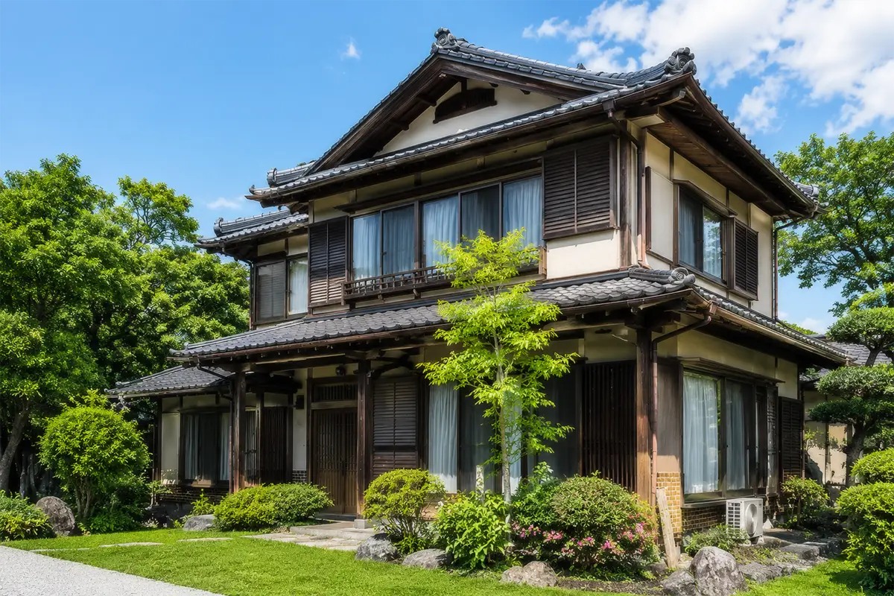
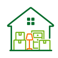
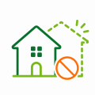
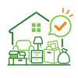
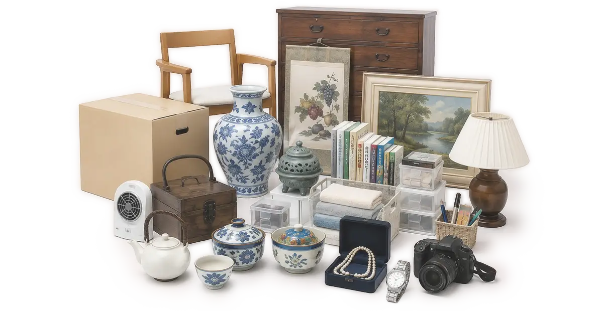
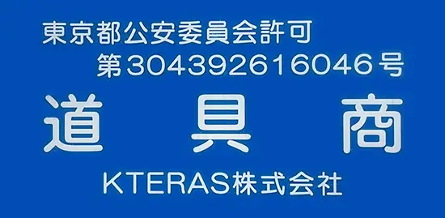
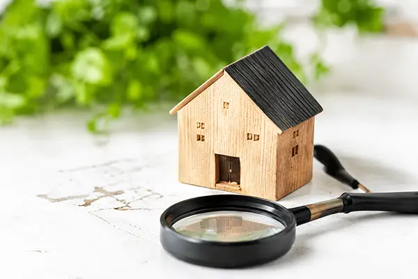

空き家問題を整理し、
最適な解決策へ導く。
相談・管理・売却・活用まで。
空き家に関するお悩みを整理し、
状況に応じた最適な解決策をご提案します。
このようなお悩みはありませんか？
相続した実家を
どうするか決められない
遠方に住んでいて
管理できない
売却したいが
何から始めればいいか
わからない

荷物が
残っている
共有名義で
話がまとまらない

再建築不可と
言われた
空き家買取バンクとは
空き家の解決方法は、一つではありません。
売却・活用・保有など、状況に応じた選択肢を整理し、
お客様にとって最適な解決策をご提案します。
-
ご相談
-
状況の整理
-
最適なご提案
-
解決へ
空き家買取バンクの強み
相続不動産に特化
相続に関するお悩みの さまざまなご相談に 専門的に対応します。
士業との連携体制
司法書士・税理士・弁護士など 各分野の専門家と連携し、 ワンストップでサポート。
難しい不動産にも対応
再建築不可・共有持分・ 事故物件など、他社で 断られた物件もご相談可能。
相談無料
ご相談・査定・ご提案は すべて無料です。 安心してご相談ください。

残置物もそのままでOK
荷物が残っている状態でも そのままご相談いただけます。 片付けは不要です。
他社にはない当社ならではの強み
古物商許可を活かした残置物対応
価値ある品は査定できる場合があります
当社は古物商許可を取得しており、家財や残置物の中に
価値のある品が含まれている場合、査定・買取が可能です。
処分費用の負担を減らせるだけでなく、売却価格のアップに
つながるケースもあります。
残置物が
そのままでも
ご相談可能
価値ある品は
査定・買取が
可能
査定額アップに
つながる場合が
あります
処分費用の
負担を軽減
できます


東京都公安委員会許可
古物商許可番号
第301082420039号
当社は法令に基づき、適正な査定・買取を行っておりますので、安心してご相談ください。
ご相談から買取までの流れ
-
1
ご相談
お電話・フォーム・LINEからご相談
-
2
現地確認・査定
専門スタッフが現地へお伺いし査定
-
3
買取金額のご提示
不動産とあわせてご提案
-
4
ご契約
ご納得いただければご契約
-
5
お引渡し
残置物もそのままでお引渡し可能
解決事例
一覧を見るよくあるご質問
一覧を見る相続や空き家に費用はかかりますか？
ご相談は無料です。状況を確認したうえで、必要な費用がある場合は事前にご説明します。
売却以外の相談もできますか？
はい、可能です。売却だけでなく、管理・活用・整理などのご相談も承ります。
荷物が残っていても相談できますか？
はい、荷物が残っている状態でもご相談いただけます。残置物の対応についてもあわせて確認します。
相続登記をしていなくても相談できますか？
はい、相談可能です。状況に応じて、専門家と連携しながら進め方をご案内します。
遠方に住んでいますが、相談できますか？
はい、遠方にお住まいの方からのご相談も可能です。電話・メール・LINEで状況をお伺いできます。
どのエリアまで対応していますか？
対応エリアは物件の所在地や状況により異なります。まずはお気軽にご相談ください。
